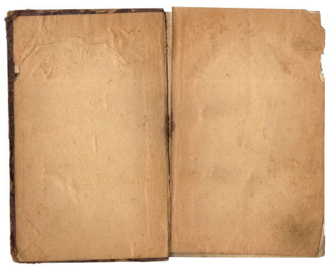

The Book of Liudas

Conestoga High School

Where the young academic began to grow
University of South Carolina


Dr. Ramy Harik took him under his wing for the next four years.
Automated Fiber Placement (AFP)

His research largely focused and revolved around AFP

After working for a year in half on dry fiber placement he looked
towards the business side and helped evaluate suppliers
To explore the world and gather knowledge he worked in on a cellular
manufacturing project in France his sophomore year summer.

After working in academia for so long, Liudas decided it was time to
take a look at what the professional life was like as an intern at
ANSYS.


Through his work and research he decided mechanical engineering wasn't
for him and that he wanted to transition to computer science.

He spent another summer in europe working in Germany using Abaqus to
create 3D shapes.
For his last few projects at USC he moved towards process planning and
data visualization.


After college, Liudas explored New Zealand in a van for 6 months. He
finally got all the outdoors his heart could want.

Now Liudas is working towards his PhD in computer science and
specializes in data visualization.